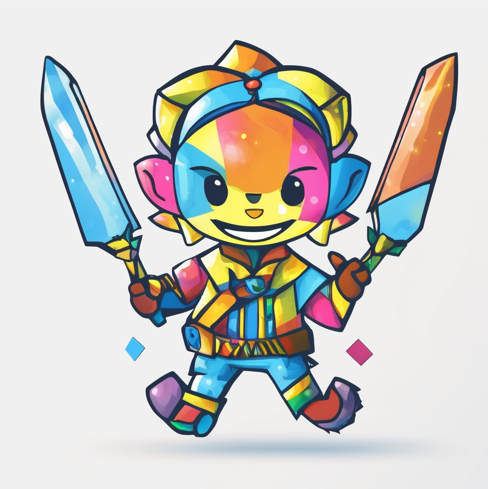

¿Quiénes somos?
Logo

Misión
Conectar personas para resolver tareas diarias y generar ingresos a través de servicios colaborativos.
Visión
Ser la plataforma líder para ayudar y generar oportunidades entre personas de cualquier perfil.
Principios
- Confianza primero: Verificamos a cada trabajador y mostramos opiniones reales para que el cliente sepa con quién trata.
- Transparencia total: Precios claros, sin letras pequeñas ni sorpresas. Sabes lo que pagas y por qué.
- Trabajo con dignidad: Valoramos a quienes hacen el trabajo duro. Les damos visibilidad y mejores oportunidades.
- Soluciones rápidas y locales: Conectamos personas con trabajadores de su zona para resolver problemas del día a día, sin complicaciones.
Valores
- Responsabilidad: Cumplimos lo que prometemos. Cada chamba es un compromiso.
- Respeto: Valoramos a cada persona, sin importar su oficio, origen o nivel técnico.
- Accesibilidad: Creamos una plataforma fácil de usar, abierta a todos, sin importar su nivel digital.
- Desarrollo local: Impulsamos la economía de barrios y comunidades al conectar talento con demanda real.